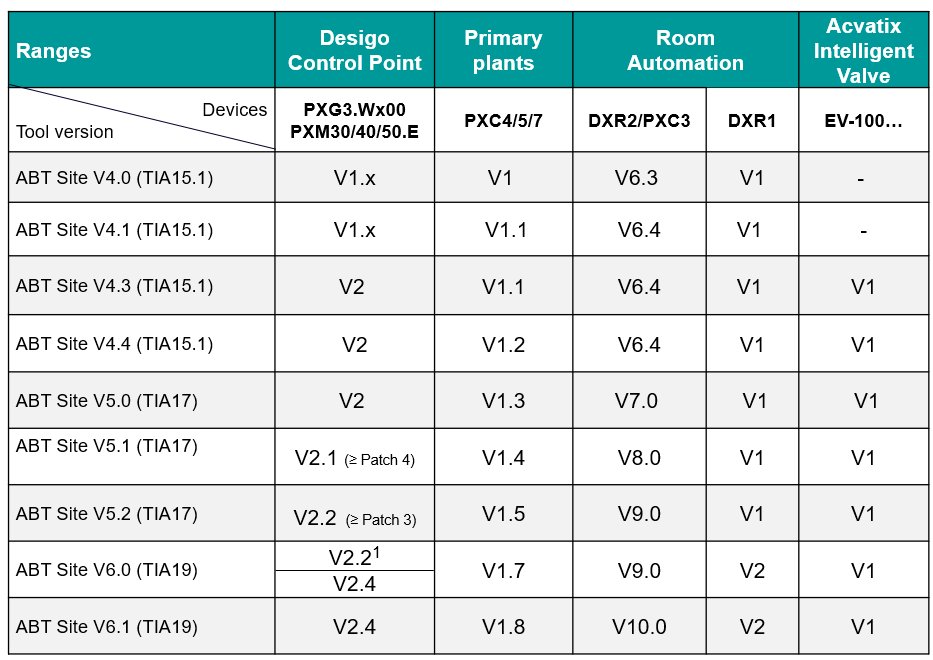

Overview of device versions in ABT Site

Reading example:
PXC4/5/7 device version V1.2 was introduced with ABT Site V4.4 and therefore supports all features up to this release. If the extended function level of ABT Site V5.0 is needed (for example, KNX PL-Link support) an update to V1.3 is required for existing installations.
| BACnet revisions | ||||
|---|---|---|---|---|---|
Device | PXC4/5/7 | DXR2 | PXC3 | PXG3.W100/200-2 | PXM30/40/50.E PXM30/40/50-1 |
ABT Site 5.2 |
| 1.16 | 1.16 | 1.16 | 1.16 |
ABT Site 6.0 | 1.20 | 1.16 | 1.16 | 1.16 | 1.16 |
ABT Site 6.1 | 1.20 | 1.18 | 1.18 | 1.23 | 1.23 |